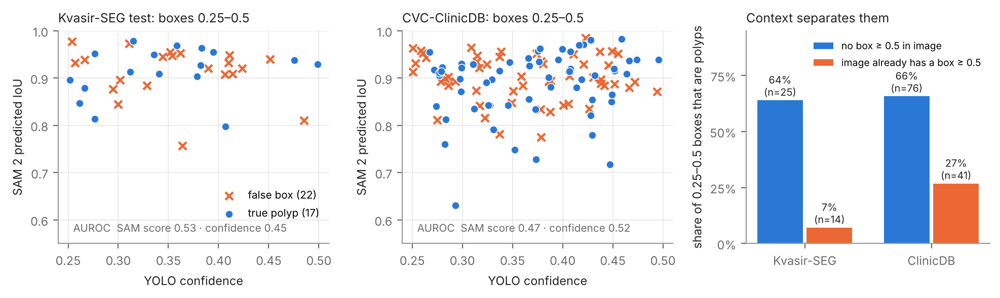

| Group | F26-13 |
| Track | A (Research & Development) |
| Instructor | Dr. Hajra Waheed |
| Date | 15 November 2026 |
| Name | Roll number |
|---|---|
| Kashish Fatima (lead) | 24L-2605 |
| Khushbakht Sohail | 24L-2604 |
| Zahra Saeed | 24L-2512 |
F26-13.ipynb (rebuilds every table and figure in this report from the Phase 3 result files, CPU only, about one minute)Summary. Phases 3–4 showed that our method CASP v1 (C) beats the YOLO → SAM 2 baseline (B) [1]–[3] on Kvasir-SEG [4], on CVC-ClinicDB [5] (another hospital) and on nine image corruptions, but that the whole gain comes from its confidence gate: lowering the threshold alone (T) does as well, and SAM 2's score never rejected a box. Phase 5 asks why, using only the saved Phase 3 logs (1,175 candidate boxes with their YOLO confidence and SAM 2 score, ground-truth boxes from the oracle run O; no GPU, no Phase 3 number changed). We (i) decompose the remaining error, (ii) test which signals can tell a real polyp box from a false one, (iii) explain the results theoretically and (iv) test a rule fixed in advance from that theory, the fallback rule F (DL-44). Code: src/eval/filter_analysis.py; tables: docs/tables/phase5/; decisions DL-44 and DL-45.
A detector's confidence is calibrated, at best, on its training distribution; under dataset shift its scores drift and usually drop [8]. Our logs show exactly this: the median confidence of true polyp boxes falls from 0.873 on Kvasir-SEG to 0.794 on ClinicDB, the share of true boxes at ≥ 0.5 falls from 88.6% to 77.3%, and the share below 0.25 rises from 3.0% to 12.0%. A threshold of 0.5 chosen on the source domain therefore loses recall precisely where it matters, and lowering it to 0.25 moves the operating point back along the precision–recall curve. Whether that is worth it is a cost question: a box should be kept when P(polyp | box) × gain from a found polyp exceeds (1 − P) × cost of a false alarm [9]. Between 0.25 and 0.5, P(polyp) is about 0.44 on Kvasir-SEG (17 of 39 boxes) and 0.52 on ClinicDB (61 of 117); in screening, where a missed polyp is the costlier error, keeping such boxes is the right decision on average. This is the whole of CASP's gain over B.
SAM 2's IoU head is trained to predict the IoU between the mask it outputs and the object the prompt designates [3], [6]. It answers "is this a clean, complete segment of whatever is in the box?", not "is the thing in the box a polyp?". A fold, a light reflection or a bubble inside a false box is a well-defined object, so SAM 2 segments it cleanly and scores it high. The data agree (Figure 1): among the kept boxes, 91% (Kvasir-SEG) and 96% (ClinicDB) of the false ones score ≥ 0.8, and inside the 0.25–0.5 band the SAM 2 score separates true from false boxes no better than chance (AUROC 0.53 [0.34, 0.71] and 0.47 [0.37, 0.58]). Over all kept boxes it does reach 0.69 and 0.66, but only because it is correlated with YOLO's confidence (r = 0.36 and 0.44): multiplying the two gives 0.861 and 0.822, identical to confidence alone (0.861, 0.820). SAM 2's score adds no information about class, which is why the acceptance rule of Phase 3 never fired at any threshold we could set. The same argument explains why the candidate prompts and self-prompting were neutral: for a correct box SAM 2 is already near the oracle (E[Dice | mask] 0.95 with ground-truth boxes), and choosing the best of several highly correlated candidates by a noisy estimate of quality mostly selects the candidate whose score is over-estimated, so the expected gain is close to zero and can be negative [7].

Figure 1. Every box T kept with confidence 0.25–0.5, labelled against the ground-truth boxes. Left, centre: true polyps (blue dots) and false boxes (orange crosses) overlap completely in YOLO confidence and in SAM 2's predicted IoU. Right: whether the image already has a box ≥ 0.5 separates them (AUROC 0.77 on Kvasir-SEG, 0.68 on ClinicDB).
If neither per-box score carries the class, the information has to come from the rest of the image. Most colonoscopy frames show one polyp (194 of 200 Kvasir-SEG and 582 of 612 ClinicDB test images), so by Bayes' rule an uncertain box is far less likely to be a polyp when a confident one has already been found: in our logs 7% (1 of 14) versus 64% (16 of 25) on Kvasir-SEG and 27% (11 of 41) versus 66% (50 of 76) on ClinicDB (Figure 1, right). This is the reasoning behind F, written down before computing its results (DL-44) and using only the existing thresholds 0.25 and 0.5, so nothing was tuned on the test sets. F acts as an image-level suppression step with a single-polyp prior. Its limits follow from the same prior: it removes real second polyps and fragments of large polyps (ClinicDB box recall 0.780 → 0.763), and under strong noise, where the confident box itself is more often wrong, the uncertain box it discards is sometimes the polyp (noise severity 2). The 75 ClinicDB images with no box above 0.25 are out of reach of any rule that only re-ranks YOLO's boxes; they need a detector that transfers better (training on both hospitals, or test-time adaptation).
Work division. Kashish Fatima (lead): results, decision log, review. Khushbakht Sohail: hosted demo, error analysis, reproducibility. Zahra Saeed: filter analysis, theoretical insights, notebook.